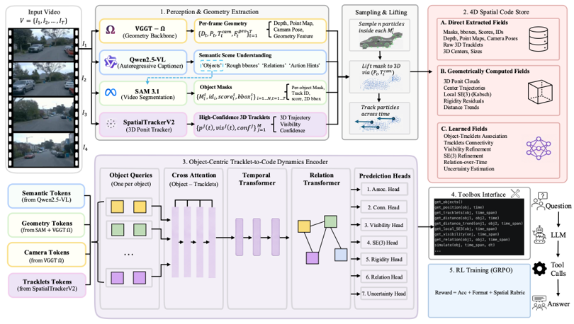

Identifier
Question-conditioned entities, IDs, attributes, relations, and event hypotheses.
Qwen3-VLJohns Hopkins University · CCVL
A plug-in visual parsing system that turns video into explicit object-centric evidence spanning identity, geometry, motion, visibility, relations, and events, then adapts that evidence to each reasoning task.
01 · ParseAnything
Physical reasoning spans collisions, support, rotation, disappearance, path planning, and counterfactual events. ParseAnything separates the representation from rapidly changing foundation models, so each perception role can be replaced without changing the representation contract.
Question-conditioned entities, IDs, attributes, relations, and event hypotheses.
Qwen3-VLPer-object masks, confidence, stable 2D boxes, and temporal visibility.
SAM3.1Depth, point maps, camera intrinsics, camera pose, and 3D lifting.
VGGT-OmegaObject-owned trajectories, confidence, visibility, and local rigid motion.
SpatialTrackerV2
02 · Representation
The canonical scene representation keeps compact metadata in JSON and stores dense masks, geometry, and tracks in typed arrays. Select a field family from a real accepted Hamrick reconstruction.
Loading accepted code…Stable IDs, semantic attributes, scene context, pairwise relations, contacts, events, and calibrated camera state.
Question boxes, SAM masks, bbox2D sequences, raw image/world tracklets, depth, point maps, and provenance.
Centers, oriented bbox3D, size, velocity, acceleration, local SE(3), rigidity, visibility, and distance trends.
03 · Quantitative results
All headline numbers below are loaded from the structured Physics-280 audits. IoU is evaluation-only and never enters parser predictions or reasoning prompts.
GPT with the full parser output improves the question-weighted normalized score by 7.80 percentage points over GPT video only; grouped-bootstrap 95% CI: +2.05 to +10.70 pp.
| Condition | Normalized | Categorical | Number score | Multi-select F1 | Confidence |
|---|
04 · Throughput
Fresh cache-disabled execution on four NVIDIA RTX A5000 workers. Analyzer and Tracker are invoked only for the 40 3D samples.
05 · Qualitative gallery
Each animation is a real accepted parsing overlay. Use the filters to compare 2D dynamics, frozen multiview 3D, and dynamic 3D.

Dynamic objects, hole context, trajectories, visibility, and landing relations.

Shape-aware identities, barriers, containers, and object motion in a top-down scene.

Stable ball identities, contact events, relative motion, and gate outcomes.

Azimuth-diverse views, calibrated lifting, oriented bbox3D, support, and stability evidence.

Condition-aware visibility, moving occluders, rotation, and event transitions.

Colored object identities, trajectories, interaction patterns, and rule-relevant evidence.

Agent path, doors, blocked cells, goal state, and time-varying relations.
06 · Error propagation
We remove one selected evidence group at a time, rerun the same answer condition, and connect downstream score changes to IoU-supported code quality.
07 · Adaptive evidence
A validated toolbox retrieves compact, typed slices of the parsed scene representation. Selection can optimize confidence, length, importance, and question relevance while preserving exact object, time, unit, and provenance bindings.